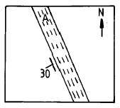
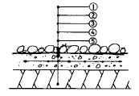
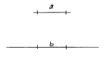
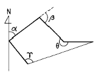
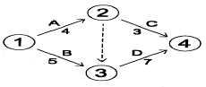
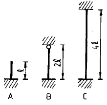
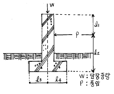
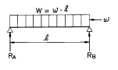
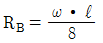
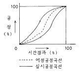

조경기사 (2003-08-31 기출문제)
1과목: 조경사
1. 라이온의 코트(Court of Lion)는 다음 중 어느곳에 속해 있는 정원인가?
- 알함브라(Alhambra) 궁원
- 알카자(Alcazar) 궁원
- 빌라 아드리안(Villa Hadrian)
- 빌라 마다마(Villa Madama)
(정답률: 65%)

2. 북경을 중심으로 청대에 조성된 명원이 아닌 것은?
- 사자림
- 열하이궁
- 북해공원
- 이화원
(정답률: 47%)
3. 고전 조경서(造景書)의 저자가 잘못된 것은?
- 장물지(長物誌) - 계성(計成)
- 낙양명원기 - 이격비(李格非)
- 동양정원론(Dissertation on Oriental Gardening) - 윌리암챔버(William Chamber)
- 정원예술(L'Art des Jardins)-알판드(J.C.Alphand)
(정답률: 89%)
4. 덕수궁 석조전 앞의 분수와 연못을 중심으로 한 정원의 양식은?
- 독일의 풍경식
- 프랑스의 정형식
- 영국의 절충식
- 이태리의 노단건축식
(정답률: 78%)
5. 18세기 조경사에 새로운 변화를 주게한 가장 밀접한 사상가는?
- 라이프니츠, 볼테에르, 루소
- 칸트, 라이프니츠, 루소
- 루소, 휴움, 볼테에르
- 라이프니츠, 칸트, 버어클리
(정답률: 35%)
6. 르네상스시대 이태리 총림(bosco)조림의 기능과 대표적인 수종이 맞는 것은?
- 기후 완화 - 월계수(Quercus ilex)
- 배경식재 - 유럽적송(Pinus sylxestrice)
- 신수(神樹) - 가중나무(Ailanthus altissima)
- 방조림(防潮林) - 느릅나무(Ulmus sp.)
(정답률: 47%)
7. 조선시대에 가장 많은 사랑을 받아 왔다고 생각되는 조경식물은 어느 것인가?
- 복숭아나무, 잣나무, 향나무, 장미, 철쭉
- 소나무, 매화나무, 대나무, 국화, 연
- 소나무, 향나무, 목련, 무궁화, 파초
- 단풍나무, 벽오동, 사철나무, 석류, 월계화
(정답률: 80%)
8. 미국에서 도시미화운동(都市美化運動, city beautiful movement)의 계기가 된 최초의 것은?
- 옐로우스톤(Yellowstone)국립공원
- 전원도시 운동
- 콜럼비아 박람회
- 위성도시의 성립
(정답률: 65%)
9. 다음 중 소쇄원(瀟灑園) 유적과 관련이 없는 것은?
- 오곡문(五曲門)
- 매대(梅臺), 난대(蘭臺)
- 광풍각(光風閣)
- 사우단(四友壇)
(정답률: 55%)
10. 중국 정원에 대한 설명 중 틀리는 것은?
- 송대(宋代)에는 태호석에 의해 석가산을 축조하는 정원이 조성되었다.
- 후한시대에 포(圃)는 금수를 키우는 곳을 말한다.
- 졸정원, 유원, 사자림 등은 소주(蘇州)의 정원이다.
- 열하피서(熱河避暑)산장은 청대(淸代)의 이궁 (離宮)에 속한다.
(정답률: 80%)
11. 영국 르네상스 정원을 구성하는 구조물과 장식품이 아닌 것은?
- 토피아리(topiary)
- 총림(bosquet)
- 문주(門柱)
- 매듭화단
(정답률: 72%)
12. 다음 설명 중 틀린 것은?
- 조선시대 궁궐정원을 맡아보던 관서는 상림원과 장원 서이다.
- 고려시대 궁궐의 정원을 맡아보던 관서는 내원서이다
- 통일신라시대 궁궐정원을 맡아보던 관서는 동원이다.
- 동산바치는 조선시대의 정원사를 뜻하는 말이다.
(정답률: 60%)
13. 고려시대의 이궁 중 특히 풍수지리설의 영향으로 인해 자연풍경이 수려한 곳에 주위와 조화되도록 꾸며진 것은?
- 중미정
- 장원정
- 만춘정
- 연복정
(정답률: 22%)
14. 튜우더 스튜어트왕조에 조성된 영국 정형식 정원이 아닌 곳은?
- 햄텐코오트(Hampton court)
- 멜버른홀(Melborun Hall)
- 레벤스홀(Levens Hall)
- 에름농빌(Ermenonville)
(정답률: 47%)
15. 무굴인도에서 발견되는 바그(bagh)란?
- 4개의 파티오(patio)로 구성된 궁전이다.
- 건물과 정원을 하나의 유니트로 하는 환경계획으로 동시에 이탈리아의 villa와 같은 개념이다.
- 담장으로 둘러쌓인 공간으로 이집트 스타일의 연못, 수로, 정자 등 시설이 있다.
- 네모난 공간으로 공공용 건물이 둘러싸여 있는 중정이다.
(정답률: 54%)
16. 이탈리아 르네상스식 정원 가운데 바로크식 특징이 나타난 정원이 아닌 것은?
- 메디치장(Villa Medici)
- 란셀로티장(Villa Lancelotti)
- 이솔라벨라(Villa Isola bella)
- 알도브란디니장(Villa Aldobrandini)
(정답률: 38%)
17. 원지의 형태가 자연곡선으로 이루어져 있는 것은?
- 백제의 무왕대에 만든 궁 남쪽의 방장지
- 부여의 정림사 남문터에 있는 쌍지
- 고구려의 동명왕릉 서쪽에 있는 진주지
- 고구려의 안학궁의 남궁 서쪽에 있는 못
(정답률: 74%)
18. 일본에 고산수(枯山水) 정원양식의 발생 배경과 거리가 먼 것은?
- 정치와 경제적 영향
- 기본 재료인 흰모래(白砂)구입의 용이성
- 직설적인 표현의 만연
- 불교의 선종(禪宗) 영향
(정답률: 47%)
19. Cloister Garden에 대한 설명이 아닌 것은?
- 회랑식 중정
- 예배당 건물의 남쪽에 위치한 네모난 공지
- 두 개의 직교하는 원로에 의해 4분
- 원로의 중심에는 로타르라는 연못 설치
(정답률: 67%)
20. 전통적인 중국 원림은 천박하게 노출함을 피하고 의경(意境)의 심오함을 추구하고 암시 작용을 수행하기 위해 벽체나 태호석 등으로 정원경관을 효과적으로 나타내기 위해 우선 가리는 수법을 사용하여 함축적이고 심장(深長)한 효과를 나타내려고 하는데 이 수법을 무엇이라 하는가?
- 욕현이은(欲顯而隱)
- 욕로이장(欲露而藏)
- 욕로이선장(欲露而先藏)
- 욕현이선은(欲顯而先隱)
(정답률: 47%)
2과목: 조경계획
21. 우리 나라에서의 해수욕장은 몇 계절형인가?
- 1계절형
- 2계절형
- 3계절형
- 4계절형
(정답률: 57%)
22. 교통, 동선계획시 가장 올바르지 않은 것은?
- 유원지 등은 주 이용기에 많은 사람들이 몰리므로 주 이용기에 발생되는 최대의 통행량을 계획에 반영한다.
- 시설물 혹은 행위의 종류가 많고 복잡할수록 동선 체계를 복잡하게 한다.
- 통행로 선정시 가능한 짧은 거리로써 직선적 연결이 보통은 바람직하지만 지형적 여건으로 우회될 경우도 있다.
- 보행동선과 차량동선이 만나는 부분에서는 보행자의 안전을 위하여 보행동선이 우선적으로 고려되어야 한다.
(정답률: 79%)
23. 다음 중 관계가 옳지 않은 것은?
- 유원지 - 도시계획시설
- 가로녹지, 가로수 - 도시공원법
- 완충녹지 - 도시공원법
- 공동주택의 어린이놀이터 - 주택건설촉진법규
(정답률: 36%)
24. 다음 분석의 항목 중 기능 분석에 포함되는 항목은?
- 자연환경 분석
- 역사성 분석
- 경관 분석
- 이용, 행태 분석
(정답률: 75%)
25. 리조트 조경계획에 기본적 요건이 아닌 것은?
- 교류나 교환의 기회 및 장소가 있어야 함.
- 체제에 필요 흥미대상이 있어야 함.
- 일정수준이상의 쾌적한 생활 서비스 및 편리성이 확보되어야 함.
- 약 1∼2시간 이내의 유치권을 지닌 도시가 주변에 있어야 함.
(정답률: 42%)
26. 도시공원 안에 설치할 수 있는 공원시설의 부지면적의 합계는 도시공원 면적에 대한 일정 비율을 초과할 수 없는 데 다음 중 맞게 배열된 것은?
- 근린공원 : 50% 이하
- 도시자연공원 : 10% 이하
- 묘지공원 : 15% 이하
- 어린이공원 : 60% 이하
(정답률: 59%)
27. 어린이 놀이터 면적 산출 기준으로 잘못된 것은?
- 특별시· 광 역시에서 100세대 미만인 경우 세대수 × 3m2
- 특별시· 광역시에서 100세대 이상인 경우 300m2 + (세대수 - 100) × 1m2
- 시· 군지역에서 100세대 미만인 경우 세대수 × 2m2
- 시· 군지역에서 100세대 이상인 경우 200m2 + (세대수 - 100) × 1m2
(정답률: 50%)
28. 조경기본계획 작성시 자료 분석 종합 후 대안 설정기준으로서 일반적으로 가장 먼저 고려되어야 할 사항은?
- 토지이용 및 동선
- 동선 및 식재
- 식재 및 공급처리시설
- 공급처리 및 구조물
(정답률: 64%)
29. 전통 주택에서 볼 수 있는 중정(中庭)은 다음 어디에 해당된다고 보는 것이 가장 타당한가?
- 내부 공간
- 외부 공간
- 반내부, 반외부 공간
- 진입 공간
(정답률: 65%)
30. 우리나라 자연공원법에서 정하고 있는 자연공원의 공원시설로서 적합하지 않은 것은?
- 도로, 주차장, 궤도 등 교통.운수시설
- 휴게소, 광장, 야영장 등 휴양 및 편익시설
- 약국, 식품접객업소, 유기장 등 상업시설
- 동식물원, 자연학습장, 공연장 등 교양시설
(정답률: 24%)
31. 현행 건축법상 원칙적으로 식수 등 조경에 필요한 조치를 하여야 할 법정대지 면적은?
- 165 m2 이상
- 200 m2 이상
- 255 m2 이상
- 300 m2 이상
(정답률: 47%)
32. 다음 중 공원계획의 수립에 필요한 과정이 아니라고 생각되는 것은?
- 마스터플랜 작성
- 계획의 프로그램 작성
- 세부계획작성
- 도시계획의 수정 작성
(정답률: 68%)
33. 도시계획시설 가운데에서 도시공간시설이 아닌 것은?
- 광장
- 공원
- 녹지
- 운동장
(정답률: 46%)
34. 도시지역 안에서 자연경관의 보호와 시민의 건강, 휴양 및 정서생활의 향상에 기여하기 위하여 도시관리계획 수립 절차에 의해 조성되는 공원의 유형이 아닌 것은?
- 어린이공원
- 근린공원
- 자연공원
- 묘지공원
(정답률: 50%)
35. 다음 중 옥상정원 계획시 반드시 고려 해야 할 사항이라고 볼 수 없는 것은?
- 지반의 구조 및 강도
- 지하수위
- 구조체의 방수 및 배수계통
- 미기후의 변화
(정답률: 65%)
36. 도심지내 소녹지공간(mini park)의 입지설정 기준 중 가장 중요한 것은?
- 안전성
- 접근성
- 쾌적성
- 상징성
(정답률: 47%)
37. 지질도에서 다음 그림과 같이 나타났을 경우 암석층 A의 경사각은 얼마인가?

- 수평면으로부터 30° 기울어졌다.
- 수직면으로부터 좌측으로 30° 기울어졌다.
- 지표면으로부터 30° 기울어졌다.
- 정북(北)으로부터 좌측으로 30° 기울어졌다.
(정답률: 56%)
38. 어떤 프로젝트가 시공되고 얼마동안의 이용기간을 거친 후 그 설계 혹은 계획에 대한 평가를 함으로써 설계의도가 그대로 반영되고 있는지, 이용자의 행태에 적합한 공간구성이 이루어졌는지 등을 알아보고자 하는 평가는?
- 환경영향평가(environmental impact assessment)
- 이용 후 평가(post occupancy evaluation)
- 시각자원평가(visual resource assessment)
- 설계대안평가(design alternatives evaluation)
(정답률: 50%)
39. 메슬로(maslow)의 욕구 위계 중 일부를 열거한 것이다. 열거된 것 중에서 가장 성숙한 단계는?
- 안전
- 기초
- 소속
- 자아 - 지위
(정답률: 55%)
40. 관광, 레크레이션 수요추정에 사용되는 경영효율에 대한 설명 중 적합치 않은 사항은 어느 것인가?
- 관광 수요가 가장 극대점에 도달하는 계절에는 100%를 초과하여 수요추정을 한다.
- 시설의 경영상 수지분기점이 되는 지표이다.
- 시설의 연중 평균이용율을 고려하여 설정한다.
- 경영효율은 상한선 보다 하한선 설정이 더 중요하다.
(정답률: 53%)
3과목: 조경설계
41. 조경설계기준에서 정한 의자(벤치)에 관한 기술로서 틀린 것은?
- 앉음판의 높이는 34-46cm를 기준으로하되 어린이를 위한 의자는 낮게 할 수 있다.
- 등받이 각도는 수평면을 기준으로 95 - 110° 를 기준으로 하고 휴식시간이 길수록 등받이 각도를 크게 한다.
- 등받이의 넓이는 사람의 등뒤로 부터 무릎까지의 길이보다 넓어야 한다.
- 의자의 길이는 1인당 최소45cm를 기준으로 하되 팔걸이 부분의 폭은 제외한다.
(정답률: 59%)
42. 옥외 농구장에 대한 설명 중 옳은 것은?
- 미끄러짐 방지를 위해 강한 콘크리트와 같은 강한 포장재를 쓴다.
- 2면 이상 설치시 최저 10m 이상의 간격을 확보하여야 한다.
- 라인의 바깥쪽에는 최소 3m의 공간을 남겨두어야한다.
- 국제규격은 25m x 18m이다.
(정답률: 41%)
43. 설계자와 행태과학자(심리학자, 사회학자)의 상대적 차이점을 가장 옳지 못하게 설명하고 있는 것은?
- 설계자는 종합하는 사람이며, 행태과학자는 분석을 주로 하는 사람이다.
- 설계자는 행태의 과정을 주로 다루며, 행태과학자는 장소를 중심적으로 다룬다.
- 설계자는 문제 중심적이며, 행태과학자는 현장 중심 적이다.
- 설계자는 목표를 설정하고 이를 효율적으로 성취하는 데 최선을 다하며, 행태과학자는 인간과 환경의 관계성 규명을 위하여 노력한다.
(정답률: 50%)
44. 다음 그림은 연못 바닥 단면 상세도이다. 순서대로 정확히 기입된 것은 다음 중 어느 것인가?

- ① 철근, ② 조약돌깔기, ③ 잡석다짐, ④ 콘크리트,⑤ 방수몰탈
- ① 잡석다짐, ② 철근, ③ 콘크리트, ④ 방수몰탈, ⑤ 조약돌깔기
- ① 조약돌깔기, ② 방수몰탈, ③ 콘크리트, ④ 철근,⑤ 잡석다짐
- ① 방수몰탈, ② 콘크리트, ③ 조약돌깔기,④ 철근,⑤ 잡석다짐
(정답률: 62%)
45. 자연공원 내 표지시설 설계시 유의사항으로 거리가 먼 것은?
- 표시된 내용이 이해하기 쉬울 것
- 문자나 그림을 조각해서 넣을 것
- 적정한 간격으로 설치할 것
- 재료는 주로 철재를 사용할 것
(정답률: 57%)
46. 다음 중 디자인의 일반적 조건에 해당하지 않는 것은?
- 실용성
- 장식성
- 독창성
- 경제성
(정답률: 31%)
47. 다음에서 a 와 b는 같은 길이이나 a가 길게 보인다. 이러한 현상을 무엇이라고 하는가?

- 분할의 착시(錯視)
- 대비(對比)의 착시
- 각도 또는 방향의 착시
- 뮤라 라이야의 도형
(정답률: 38%)
48. 운동이나 활동을 위하여 설계에 적용하는 가장 적정 경사의 기준은?
- 2 - 5%
- 10 - 14%
- 15 - 20%
- 20 - 24%
(정답률: 49%)
49. 경관계획을 위한 모의조작(simulation)기법에 포함되지 않는 것은?
- 계획평면분석
- 컴퓨터그래픽
- 사진수정
- 모형제작
(정답률: 46%)
50. 배수시설의 설계시 고려해야 할 내용으로 옳지 않은 것은?
- 녹지의 표면배수 기울기는 고려하지 않아도 된다.
- 배수에는 지표배수와 심토층 배수의 두 방법이 있다.
- 배수시설의 기울기는 0.5% 이상으로 하는 것이 바람직하다.
- 개거배수는 지표수의 배수가 주목적이고 암거배수는 심토층배수를 위한 것이다.
(정답률: 65%)
51. 실시설계 도면작성 과정에 있어서 요구되어지는 표현의 특성을 바르게 설명한 것은?
- 색채를 활용하여 표현적인 기법을 사용한다.
- 투시도, 사진, 모형 등을 이용한다.
- 창조적이고 직관적인 표현력이 요구된다.
- 명료하고 기계적인 표현력이 요구된다.
(정답률: 84%)
52. 인간과 인간 사이의 거리를 크게 친밀한 거리, 개인적 거리, 사회적 거리, 공적거리 등 4가지로 나누어 각각 원근의 상을 가지고 있다고 인간거리대를 설명한 사람은?
- Robert Sommer
- Edward T.Hall
- Kurt Lewin
- Luna B. Leopold
(정답률: 47%)
53. 다음 중 삼각 스케일로써 활용하기 어려운 축척은?
- 1/30
- 1/200
- 1/7
- 1/50,000
(정답률: 77%)
54. 다음의 경관 유형 용어들의 설명 중 적절치 않은 것은?
- View: 특정지점에서 관찰되는 경치
- Vista: 특정경관대상을 향해 한정된 전망
- Terminus: 경관의 배경
- Enframement: 특정 전망을 강조하기 위한 틀짜기
(정답률: 44%)
55. K.Lynch가 주장하는 경관의 이미지 요소 중에서 관찰자의 이동에 따라 연속적으로 경관이 변해가는 과정을 설명해 줄 수 있는 것은?
- Landmark(지표물)
- Path(통로)
- Edge(모서리)
- District(지역)
(정답률: 32%)
56. 다음 설명 중 상대적 포로포션이 아닌 항목은?
- 개울과 강
- 찻잔과 항아리
- 기하학의 정방형
- 모형과 실물
(정답률: 20%)
57. J.O.Simonds 가 말하는 외부공간을 형성하는 세가지 요소 중 평면적 요소(base plane)의 특징으로서 적합치 않은 것은?
- 대지내의 토지이용 상황에 직접 관련된다.
- 모든 생명체의 근원을 이룬다.
- 우리 자신의 동선(動線)이 이 위에 존재한다.
- 수직적 요소보다 통제(control)가 용이하다.
(정답률: 50%)
58. 투시도에 관한 다음 설명 중 맞는 것은?
- 투시도를 그릴 때 시점의 높이는 항상 지면의 높이로 설정된다.
- 시점이 대상물에 너무 근접하면 비뚤어지고 너무 멀어지면 입체감이 떨어진다.
- 투시도란 도법에 맞는 표현이 핵심이므로 세세한 부분까지 정확한 작도법을 준수하여 그려야 한다.
- 투시도의 종류에는 1점 투시도, 2점 투시도, 3점 투시도가 있으며 각각 인테리어, 건축, 기계 등 전문 분야별로 특수하게 사용되는 것을 일컫는다.
(정답률: 39%)
59. 다음의 표현기법에 관한 내용 중 맞는 것은?
- 레터링의 글씨 크기는 도면의 상황에 따라 적당한 크기를 선택하는 것이 좋다.
- 레터링은 영문표기를 정확하게 하기 위한 약속이며, 약속된 방식을 지켜 규범화된 글씨체가 있다.
- 구조재의 마감표시는 사용되는 재료별로 구분하여 도면효과를 낼 수 있는 다양한 표현을 하는 것이 좋다.
- 축척 표시에서 바 스케일은 거의 사용하지 않으나, 기본설계 도면에서 도면 구성상 보기좋게 사용하는 것이 일반적이다.
(정답률: 14%)
60. 다음의 수경시설의 설계에 관한 설명 중 틀린 것은?
- 실개울을 설계할 경우 평균 물깊이는 3 ~ 4cm 정도로 하는 것이 좋다.
- 수경시설의 설계에는 정수, 조명, 전기 등의 부대되는 설비의 설계를 포함한다
- 분수의 설계시 바람에 흩어짐을 고려하려면 분출 높이의 3배 이상의 공간을 확보하는 것이 좋다.
- 수경용으로 사용하는 물의 순환 횟수는 수경시설의 용도와는 무관하나 한 달에 한 두번 정도를 기준으로 고려하여 설계하는 것이 좋다.
(정답률: 57%)
4과목: 조경식재
61. 다음 수목 중 가을철에 단풍의 색깔이 황색인 수목은?
- Diospyros kaki
- Euonymus alatus
- Sorbus commixta
- Liriodendron tulipifera
(정답률: 46%)
62. 다음 수종 중 차폐식재용으로 부적당한 것은?
- Picea abies KARST
- Thuja occidentalis L.
- Eurya japonica THUNB.
- Ailanthus altissima SWINGLE
(정답률: 25%)
63. 다음 수종 중 속성조경수가 아닌 것은?
- Cinnamomum camphora (S.et Z.) KOSTERM
- Camellia japonica L.
- Torreya nucifera SIEB. et ZUCC.
- Pterocarya stenoptera DC.
(정답률: 20%)
64. 조경식물로서 기능적 특성이 가장 잘 설명된 것은?
- 지하고(枝下高)가 사람 키보다 낮고 수관이 큰 수종으로 악취나 가시 및 병해충이 없는 나무는 녹음효과가 크다.
- 지하고가 높고 잎이 수직방향으로 치밀하게 부착하는 수종을 열식해야 방음효과가 크다.
- 가지와 잎이 밀생하고 수분이 많은 다육질 잎을 지닌 수목은 방화수로서 가장 적합하다.
- 천근성 수종으로 내조성인 침엽수종들은 줄기가 바람에 강하므로 방풍수로 적합하다.
(정답률: 54%)
65. 가을화단용 초화류는?
- 아게라텀
- 봉선화
- 숙근플록스
- 알리섬
(정답률: 20%)
66. 지주의 설치가 용이하지만 설치면적을 많이 차지하여 통행에 불편을 주는 단점도 있는 지주는?
- 단각지주
- 삼각지주
- 사각지주
- 삼발이지주
(정답률: 54%)
67. 식재비탈면의 기울기가 최소 어느 정도일 때 교목을 식재해도 좋은가?
- 1 : 1 정도
- 1 : 1.5 정도
- 1 : 2 정도
- 1 : 4 정도
(정답률: 56%)
68. 다음 중 파종기가 같고 1년생 춘파 초화만으로 짝지은 것은?
- 색비름, 폐튜니아, 콜레우스, 샐비어
- 플록스, 채송화, 시네라리아, 팬지
- 접시꽃, 물망초, 데이지, 금어초
- 시계초, 카아네이션, 제라늄, 칼랑코에
(정답률: 41%)
69. 도시 생태계의 일반적 특징이 아닌 것은?
- 귀화식물 등 불건전한 특유의 종 출현
- 원예종 위주의 증가로 생물적 다양성 증가
- 생물적 다양성 저하
- 생태계 구조의 단순화
(정답률: 55%)
70. 층층나무과 수종이 아닌 것은?
- 산수유
- 흰말채나무
- 이팝나무
- 산딸나무
(정답률: 36%)
71. 부등변삼각형 식재는 다음의 어느 식재유형에 속하는가?
- 정형식 식재
- 자연풍경식 식재
- 자유식재
- 군락식재
(정답률: 71%)
72. 다음의 식재 기능에 관한 설명 중 옳지 않은 것은?
- 미기후를 개선한다.
- 건물의 직선을 완화시킨다.
- 소음을 감소시켜 준다.
- 공간을 시각적으로 개방시킨다.
(정답률: 67%)
73. 다음 중 수도(數度)를 나타내는 식으로 맞는 것은?
- 조사한 총면적 / 어떤 종의 총 개체수
- 어떤 종이 출현한 방형구 / 조사한 총 방형구 수
- 어떤 종의 총 개체수 / 조사한 총면적
- 어떤 종의 총 개체수 / 어떤 종이 출현한 방형구 수
(정답률: 15%)
74. 로비네트(G.Robinette)는 식물재료의 기능적 이용을 네가지로 구분하고 있는데 다음 중 로비네트의 구분에 속하지 않는 것은?
- 심미적 이용(aesthetic uses)
- 건축적 이용(architectural uses)
- 환경적 이용(environmental uses)
- 기상학적 이용(climatological uses)
(정답률: 31%)
75. 다음 기술 중 부적당하다고 생각되는 것은?
- 식물군락의 구성종이 변모하여 타수종 군락으로 종구성이 변화해 가는 것을 천이라고 한다.
- 천이가 발생하는 원인은 차광 등 환경변화에 의한 것이 일반적이다.
- 천이를 반복하면서 식물군락이 안정된 상태일 때에 극상이라고 한다.
- 천이는 자연의 힘만으로 이루어지며 인위적 작용의 영향을 받지 않는다.
(정답률: 60%)
76. 식재거리 사방 2m 간격으로 정삼각형 식재를 한다면 1ha당 수목은 약 몇 그루 식재되는가? (단, 정3각형 1본당 면적의 공식은 0.866 ℓ2, ℓ는 묘목간거리이다)
- 약 3,000본
- 약 2,886본
- 약 2,533본
- 약 2,255본
(정답률: 58%)
77. 군집의 안정성 및 성숙도를 표현하는 지표로서 중요도, 균재도지수, 우점도 등이 이용되는 것은?
- 녹지자연도
- 층화도
- 산재도
- 종다양도
(정답률: 57%)
78. 6톤 트럭의 평떼 적재량을 갖고 이음매 4cm 가 되게 이음매 붙이기로 잔디밭을 조성하려고 한다. 잔디밭 조성의 최대가능 면적은? (단, 6톤 트럭의 평떼 적재량은 1200매이고 잔디규격은 표준규격이다. 이음매를 4cm로 하는 경우 잔디밭 실지면적의 70%에 해당하는 뗏장이 필요하다고 한다. )
- 100 m2
- 122 m2
- 154 m2
- 192 m2
(정답률: 48%)
79. 다음 수종 중 꽃의 색깔이 흰색으로 짝지어진 것은?
- 산딸나무, 치자나무, 병아리꽃나무
- 생강나무, 조팝나무, 박태기나무
- 찔레나무, 해당화, 골담초
- 호도나무, 산사나무, 살구나무
(정답률: 45%)
80. 수목의 식재토양은 배수성과 통기성이 좋은 단립구조가 이상적이다. 다음 중 토질의 이상적인 구성비는?
- 토양입자 30%, 수분 30%, 공기 40%
- 토양입자 40%, 수분 30%, 공기 30%
- 토양입자 50%, 수분 20%, 공기 30%
- 토양입자 50%, 수분 25%, 공기 25%
(정답률: 72%)
5과목: 조경시공구조학
81. 시멘트의 단위용적 중량은 1500kg/m3를 편의상 표준으로 한다. 1m3의 시멘트는 포대로 몇 포대인가?
- 18.75포대
- 30포대
- 37.5포대
- 50포대
(정답률: 48%)
82. 다음은 설계서에서 사용하는 재료의 규격의 단위와 단위 수량의 단위이다. 틀린 것은?
- 잔디(떼) : ㎝ - m2
- 모래 자갈 : ㎜ - m3
- 합판 : ㎜ - 장
- 철강재 : m - ton
(정답률: 42%)
83. 다음은 강우 강도 곡선과 강우량에 관한 설명이다. 옳은 것은?
- 강우량 곡선에서는 강우계속시간이 증가하면 강우량이 체감한다.
- 강우강도 곡선은 일반적으로 1차식으로 표시된다.
- 강우강도는 강우계속시간이 증가하면 증가된다.
- 강우강도는 mm/hr로 표시된다.
(정답률: 59%)
84. 다음 중 시공관리의 3대 기능이 아닌 것은?
- 노무관리
- 품질관리
- 원가관리
- 공정관리
(정답률: 40%)
85. 다음 구조물에 대한 설명 중 트러스(Truss)의 설명은 어느 것인가?
- 축 방향으로 압축력을 받는 단일 부재(部材)
- 보와 기둥 즉, 수직재와 수평재가 강절점 (rigid joint)으로 접합된 구조체
- 직선재를 삼각형으로 구성하되 절점은 마찰이 없는 회전 절점으로 연결된 구조체
- 부재축이 곡선으로 되어 있는 구조체
(정답률: 50%)
86. 그림의 다각형에서 트래버어스 측량에서 측정하는 편각이란 어느 것인가?

- α
- β
- γ
- θ
(정답률: 45%)
87. 목재를 방부처리하는 방법이 아닌 것은?
- 표면탄화법
- 약제도포법
- 관입법
- 약제주입법
(정답률: 38%)
88. 다음은 광원(光源)에 대한 설명이다. 적합치 않은 것은?
- 백열등:광색이 따뜻한 느낌을 주기 때문에 휴식공간 조명에 적당하다.
- 나트륨등:적색을 띤 독특한 광색으로 열효율이 낮고 투시성이 수은등에 비하여 낮다.
- 형광등:관 내벽의 형광물질로 자외선을 발생시켜 빛을 얻으며 광색이 차다.
- 수은등:수은증기압을 고압으로 가압하여 고효율의 광원을 얻는다. 큰 광속(光束)으로 가로 조명에 적합하다.
(정답률: 58%)
89. 도로조건만으로 정한 최고속도로서 도로의 기하학적 설계에 기준이 되는 속도는?
- 주행속도
- 구간속도
- 임계속도
- 설계속도
(정답률: 50%)
90. 다음은 담(wall)의 구조에 관한 사항이다. 옳은 것은?
- 벽돌담의 기초는 독립기초가 적절하다.
- 담은 구조물의 자중만 작용하는 비내력벽이다.
- 벽돌담 제일 윗켜에는 모자(coping)를 쓰워서 수밀성을 높힌다.
- 벽돌담에는 반드시 기둥을 설치해야 한다.
(정답률: 45%)
91. 목재의 성질 중 틀린 것은?
- 건조변형이 적다.
- 열전도율이 낮다.
- 온도에 대한 신축성이 적다.
- 비중이 작은 반면 압축강도가 크다.
(정답률: 31%)
92. 다음의 크리티칼 패스(주공정선)를 바르게 계산한 것은?

- 7일
- 8일
- 11일
- 12일
(정답률: 54%)
93. 다음은 장주(長柱)를 도해한 것이다. 장주의 강도를 크기 순서대로 옳게 표시한 것은 어느 것인가? (단, 기둥의 재질과 단면 크기는 모두 동일하다)

- A = B < C
- A > B > C
- A = C < B
- A < B < C
(정답률: 58%)
94. 벽돌 한장의 규격이 190 × 90 × 57 일 때 0.5B 쌓기기준 으로 1m2당 소요수량을 구하면? (단, 줄눈간격은 1 cm 이다.)
- 58매
- 92매
- 65매
- 75매
(정답률: 54%)
95. 다음 그림과 같은 콘크리트 담장에서 풍압(P)에 의해 담장을 넘어 뜨리려는 힘은 어느 것인가?

- pℓ1
- pℓ2
- pℓ3
- wℓ3
(정답률: 45%)
96. 공사예정가격을 산정하기 위한 서류에 포함되지 않는 것은 어느 것인가?
- 수량 산출서
- 특기 시방서
- 견적서
- 공정표
(정답률: 35%)
97. 발주자가 제시하는 공사의 기본계획 및 지침에 따라 설계서, 기타 도서를 작성하여 입찰서와 함께 제출하는 입찰 방식은?
- 수의계약
- 제한경쟁입찰
- 설계시공 일괄입찰
- 제한적 평균가 낙찰제
(정답률: 50%)
98. 아래와 같은 단순보에 연속하중 ω 이 작용하고 있을 때 반력 RB 를 구하는 식은?

- RB= ω / 2
- RB= W / 2

- RB= ω · ℓ
(정답률: 31%)
99. 쌓기 평균 뒷길이가 60cm, 공극율이 40%인 자연석 직각 쌓기 공사의 10m2당 쌓기 면적의 평균 중량은? (단, 자연석의 단위중량 2.65ton/m3)
- 63.6ton
- 6.36ton
- 95.4ton
- 9.54ton
(정답률: 30%)
100. 옹벽에 어떤 힘이 정면에서 배면쪽으로 민다면 배토는 압축을 받는 이 압축이 커져서 파괴될 때의 압력을 무슨 토압이라 하는가?
- 압축토압
- 주동토압
- 수동토압
- 정지토압
(정답률: 28%)
6과목: 조경관리론
101. 잔디 관리 중 칼로 토양을 베어주는 작업으로 포복경, 지하경을 잘라 주는 효과가 있는 것은?
- 스파이킹(Spiking)
- 슬라이싱(Slicing)
- 통기작업(Core aerification)
- 버티컬 모잉(Verincal Mowing)
(정답률: 36%)
102. 운영관리방식 중 도급방식의 장점에 해당하는 것은?
- 전문가를 합리적으로 이용할 수 있다.
- 관리책임이나 책임소재가 명확하다.
- 관리실태를 정확히 파악할 수 있다.
- 이용자에게 양질의 서비스가 가능하다.
(정답률: 27%)
103. 연못 조성공사에 있어서 변동비에 해당되는 것은?
- 불도저등의 토공기계나 진동기 등의 손료
- 감독직원의 급료
- 현장 제 경비
- 콘크리트 타설비
(정답률: 31%)
104. 양분의 결핍현상으로서 활엽수의 경우, 잎맥, 잎자루 및 잎의 밑부분이 적색 또는 자색으로 변하며 조기에 낙엽현상이 생기고 꽃의 수는 적게 맺히며 열매의 크기가 작아지는 현상을 일으키는 것은?
- 질소(N)
- 인산(P)
- 칼륨(K)
- 칼슘(Ca)
(정답률: 50%)
1⑤. 놀이터 시설 점검 중 모래가 부족하여 보충하려고 한다. 보충할 모래판의 적절한 두께는?
- 10cm
- 20cm
- 30cm
- 40cm
(정답률: 64%)
106. 다음의 잡초에 의한 피해 중 저목(低木)의 경우에 해당 되지 않는 것은?
- 잡초에 덮인 부분의 수피가 벗겨진다
- 일조 부족 현상을 초래한다
- 밑가지가 고사(枯死)한다
- 병해충의 피해 증대 및 관상가치가 저하된다
(정답률: 39%)
107. 공정관리 곡선 작성 중 표에서와 같이 실시 공정곡선이 예정 공정 곡선에 대해 항상 안전범위 안에 있도록 예정 곡선(계획선)의 상하에 그린 허용한계선을 일컫는 명칭은?

- S curve
- Progressive curve
- banana curve
- net curve
(정답률: 75%)
108. 수목의 아황산가스 피해에 대한 설명 중 잘못된 것은?
- 기온이 낮은 봄철보다 여름에 더욱 큰 피해를 입는다.
- 아황산가스는 석탄이나 중유 또는 광석 속의 유황이 연소하는 과정에서 발생한다.
- 공중습도가 높고 토양수분이 많을 때에 피해가 줄어든다.
- 천연림이 인공림보다 아황산가스에 대한 내성이 강하다.
(정답률: 50%)
109. 멀칭의 효과가 아닌 것은?
- 토양수분이 유지된다.
- 잡초의 발생을 억제한다.
- 토양의 구조가 개선된다.
- 토양고결을 조장한다.
(정답률: 47%)
110. 조경을 목적으로 한 정지(整枝) 및 전정(剪定)의 효과 라고 할 수 없는 것은?
- 꽃눈발달과 영양생장의 균형 유도
- 수목의 구조적 안전성 도모
- 화아분화의 촉진
- 수목의 규격화 추구
(정답률: 47%)
111. 다음 그림과 같은 네트워크에서 각 작업에는 EST, EFT, LST, LFT의 4가지 시각이 있다. 다음 중 틀린 것은?
- A작업의 EST와 LST는 같다.
- B작업의 EFT는 3일 LFT는 5일이다.
- D작업의 EST는 8일 LFT는 12일이다.
- E작업의 EST는 5일, EFT는 12일이다.
(정답률: 24%)
112. 부지관리에 있어서 이용자에 의해 생태적 악영향을 미치는 주된 원인이 아닌 것은?
- 반달리즘(Vadalism)
- 요구도(Needs)
- 무지(Ignorance)
- 과밀이용(Over-Use)
(정답률: 57%)
113. 조경관리 대상물의 양적인 변화에 따라 대응하여야할 관리계획의 내용이 아닌 것은?
- 군식지의 생태적 조건변화에 따른 갱신
- 부족이 예측되는 시설의 증설
- 내구년한이 된 각종 시설물
- 귀화 식물의 번식
(정답률: 13%)
114. 건축물 유지관리 중 적정 청소요원의 수를 결정하기 위해서 산출 근거로 이용할 수 있는 기준에 속하지 않는 것은?
- 건물 연면적
- 특정 지역별 측정
- 계량적 분석방법
- 청소장비의 사용빈도
(정답률: 40%)
115. 공원관리에 있어 주민의 참가 작업조건에 가장 맞지 않는 것은?
- 작업의 규모나 전문성이 주민의 수탁능력에 맞는 작업
- 공원 애호정신의 함양, 융화 등의 효과가 기대 되는 작업
- 관리주체의 관리비의 재정적 부담을 줄일 수 있는 작업
- 자발적 참여와 협력을 필요 조건으로 하는 작업
(정답률: 10%)
116. 다음은 클레이 포장의 보수방법에 대한 설명이다. 틀린 것은?
- 불균일이 생긴 경우 황토와 양질토의 배합토를 깔고 표층안정제를 1m2당 2.5㎏을 살포 후 다진다.
- 표층안정제는 주로 염화마그네슘 또는 염화칼슘 등을 사용한다.
- 답압시는 반드시 살수를 한다.
- 다짐공은 진동롤러, 콤팩터류 또는 0.5t 간이롤러를 사용한다.
(정답률: 47%)
117. 어느 도시공원의 년간 수목 전정비는 얼마인가? (단, 수목주수:100주, 단위작업률:0.5, 작업횟수:2년마다 1회, 단가:100,000원)
- 2,500,000원
- 5,000,000원
- 7,500,000원
- 10,000,000원
(정답률: 22%)
118. 소나무(적송)에 심한 피해를 주는 솔잎혹파리를 방제하는 효과적인 방법이 아닌 것은?
- 소나무 수간에 주사기로 침투성살충제 다이메크론 유제를 주입한다.
- 5∼6월 성충의 우화시기에 일주일 간격으로 강력 살충제를 지면, 수관에 살포한다.
- 2∼3월 유충의 우화시기에 일주일 간격으로 강력 살충제를 지면, 수관에 살포한다.
- 생물학적 방법으로 천적을 증식하여 살포한다.
(정답률: 27%)
119. 조경관리예산 산출에 있어 A작업의 단위년도당 예산산출이 바르게 된 것은?
- 작업전체의 비용 × 작업률
- 작업전체의 비용 ÷ 작업률
- 작업률 ÷ 작업전체의 비용
- 1 ÷ (작업률 × 작업전체의 비용)
(정답률: 45%)
120. 미끄럼판에 사용되는 F.R.P 제품의 일반적 성질 중 물리적 성질이 아닌 것은?
- 내열성
- 압축강도
- 인장강도
- 내약품성
(정답률: 37%)